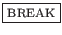

Syntaxe :
% ligne-de-commande & % jobs
Le caractère « & » permet
d'exécuter la commande en arrière plan (background) et
permet de lancer pendant ce temps là d'autres commandes en avant
plan. Lors de la déconnexion, tous les processes en arrière plan
meurent. En effet, ils ne peuvent qu'exister que si leur père
existe.
Lorsqu'une commande est lancée en arrière plan, le shell reporte
à l'utilisateur le numéro de PID (Process IDentifier) identifiant le processus
lancé en arrière plan avant de renvoyer le prompt. Une commande
s'exécutant en arrière plan ne peut pas être
arrêtée avec les touches
,
 -
- , etc.
Par contre, une sortie de session (logout) tuera tous les
processus s'exécutant en arrière plan.
, etc.
Par contre, une sortie de session (logout) tuera tous les
processus s'exécutant en arrière plan.
Il est important qu'un processus lancé en arrière plan ait ses entrées/sorties redirigées explicitement. Il est possible de voir les processes lancés en arrière plan avec la commande « jobs ».
Remarque 5..1 :
-
ne sert pas à interrompre un process mais à le mettre en attente en arrière plan. Si vous voulez interrompre une commande, utilisez «
». Pour plus de renseignements sur les touches d'interruption, reportez vous à la section
.